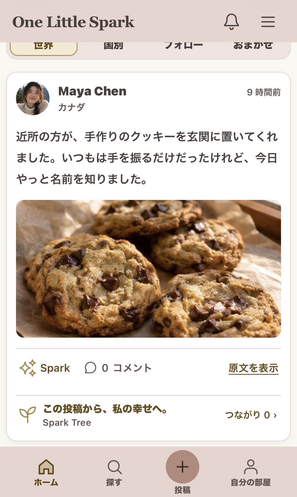
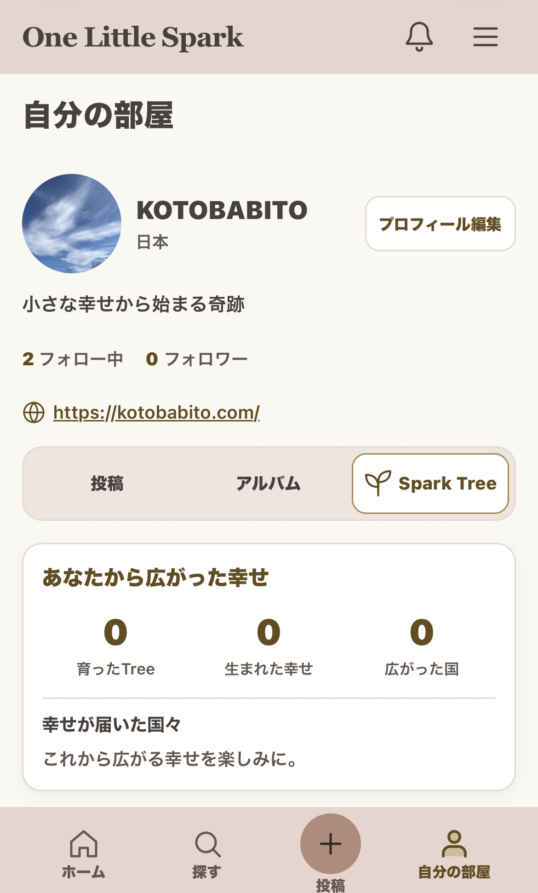
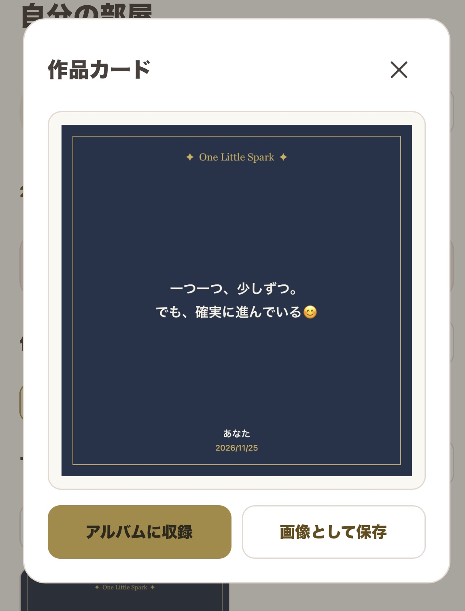

今月初めには、くまさんの言の葉たち第４巻と第５巻を早急に作らねばと取り掛かり始めたが、今日現在、それは止まっている…
なぜならば、新たなアプリ制作を始めてしまったから😅
このアプリは、数年前から、きっとこの先の未来で世界の軸の一つになると見込んで、世界中の人たちと共に応援しているプロジェクト「Pi Network」で展開される、Pi Browser 内で利用してもらうアプリ。
Pi Network とは何なのかは今回は置いといて、今日はこのアプリについて語りたい。
実はこのアプリを作る前に、今年の2月にも一つ制作したアプリがある。「Zen Verse Flip」。
これは、これまで出版したくまさんの言の葉たちを元に作られたアプリ。でも、まだ未完成😅
というのも、中間審査に提出したものの、まだ審査結果が来ていない。9ヶ月以上経ってんだけど(￣▽￣)
申請方法も２種類あって、その影響もあるんだけど、このまま待っているのもなと思い、急遽、新たなアプリの構想を練り始めた。
審査結果待ちのアプリとは異なるものの、やがては関連性のあるものにしたい！という発想を大切にし、その上で利用する人が幸せになれる、そんなアプリにしたい。
で、「One Little Spark」というアプリを作り始めた。
最初から言うけど、このアプリは、思いっきりAIの力を借りて完成を目指すアプリ。AIについては賛否両論あるけど、これからの時代は、このAIをどのように使うかで、自分の暮らしや人生までも変わってくると思う。
てことで、うちのAI「言乃葉」の力を借りて、一緒に作っている。
One Little Spark は、世界中の人たちの小さな幸せを投稿してもらうSNSアプリ。

シンプルなコンセプトだから、割と簡単にできるかと思ったけど、甘かった😅
UIなど画面のデザインはもちろん、操作性とか諸々、考えなくてはいけないことが山ほどあった。
これ、アプリやゲームを作る人ってすごいと改めて思った。ホームページを作る人もそうだけど、誰かに何かを使ってもらうための設計をする人たちって、本当にすごい。


これまでなら、人の力だけで作ると何ヶ月、何年とかかるようなものも、AIの力を使うことで数週間程度で形にできてしまう。もちろん、検証や修正も必要だから、完成までにはそれなりに日数は要するけど。
何にせよ、One Little Spark を通して、みんなが何気ないところから幸せを見つけられるような日常になればいいなと思う。
小さな幸せを共有するために、
小さな幸せを探すようになる。
小さな幸せを探すうちに、
今まで見過ごしていた幸せに気づくようになる。
そしていつか、
探さなくても幸せに気づけるようになる。
アプリの中だけでなく、
アプリの外にある日常も豊かに。
滞在時間の長いアプリではなく、
何度も帰ってきたくなるアプリに。
利用する人の時間を奪うのではなく、
利用する人の時間を豊かにする。
そんな想いで、このアプリを手掛けている。
目標は、12月10日までにまずは使ってもらえるようにすること。その後、修正等を加え、年内に正式に提出できたらいいな。
さて、どこまでできるか！またもや挑戦だ！